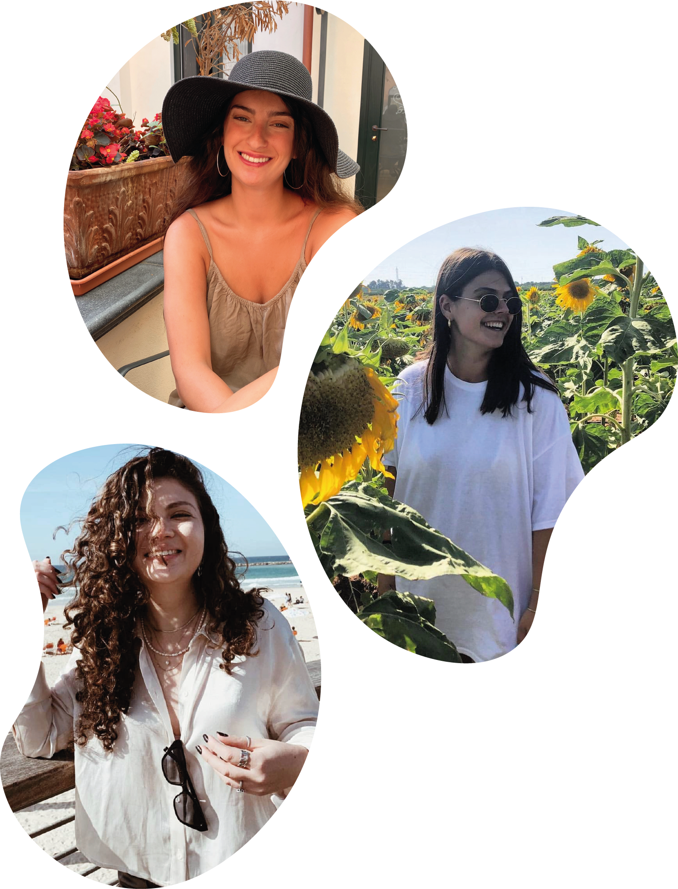

אודות - כן, לא, אדום, לבן
אתר כן, לא, אדום, לבן הוא האתר להדרכה בתרבות היין.
האתר שלנו מספק לכם את כל המידע שתוכלו להפוך למקצוענים בתחום החל ממושגים בסיסים ועד התאמת כוסות לסוג יין.
האתר פותח במסגרת פרויקט משולב לקורסים בשנה א', תשפ"א:
אפיון ממשק וחווית משתמש
עיצוב ממשק משתמש
פיתוח אתרי אינטרנט
הנגשת אתרי אינטרנט
האתר אופיין ועוצב לפי עקרונות של "עיצוב ממשק" ופותח ב- HTML5 ו- CSS3 תוך התחשבות בעקרונות "נגישות אתרים" תחת עמידה בסטנדרט AA.
האתר כולל תוצר אינטראקטיבי לייצוג ידע המאופיין ומפותח בקורסים "ארגון וייצוג ידע" ו"מבוא לתכנות אינטראקציה ואנימציה".
